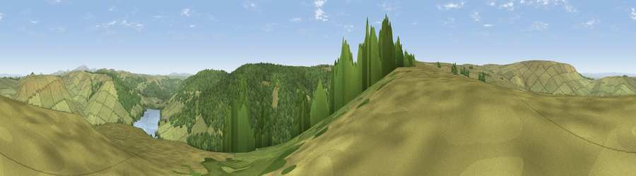

Viewpoint near Byrness
#6406 in England · top 16% of its area beats it · near ByrnessThe view, rendered

A 360° render of this exact spot computed from the terrain model, tree cover and land cover — summer colours, afternoon light, calibrated against photographs of famous viewpoints. Real trees, hedges and buildings will differ in detail.
The panorama
Grey silhouette: terrain skyline in each direction (720 bearings, Earth curvature and refraction included). Dashed green: skyline with trees (+15 m) and buildings (+8 m) as obstacles. Blue strip: how far the ground is visible on each bearing.
Where the view opens
Wedge length = distance to the farthest visible ground on that bearing (vegetation-aware). Rings at 10, 25 and 50 km.
What fills the view
57% grassland · 41% woodland · 1% water
Angular shares of the visible panorama (visual magnitude), not map area. Landscape diversity 0.33 (0–1 Shannon).
Key numbers
More beautiful places nearby
The staircase of upgrades: each row has a higher view potential than everything closer. Driving times are estimates from straight-line distance, calibrated against real road routing — check an actual route before setting out.
| Place | Direction | Drive | Score |
|---|---|---|---|
| Viewpoint near Byrness | SSE · 3 km | ~7 min | 69.5 |
| Viewpoint near Byrness | S · 3 km | ~8 min | 72.2 |
| Ellis Crag | ESE · 4 km | ~9 min | 77.2 |
| Carter Fell | NW · 4 km | ~10 min | 78.3 |
| Viewpoint c12122_7374 | NW · 4 km | ~10 min | 78.9 |
| Viewpoint c11995_7247 | WSW · 10 km | ~19 min | 82.1 |
| Viewpoint c12273_7856 | ENE · 24 km | ~39 min | 83.7 |
| Viewpoint c12396_7887 | NE · 29 km | ~45 min | 85.7 |
55.31956, -2.45104 · source: screening · position refined by local search. Computed location — check access rights before visiting.